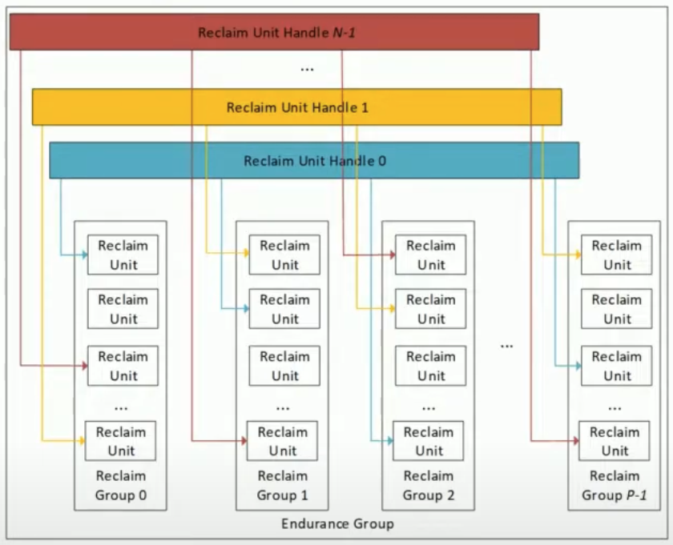
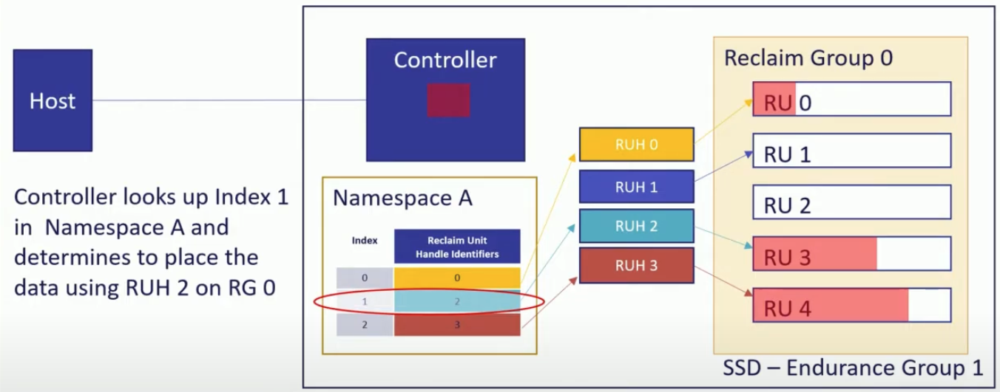
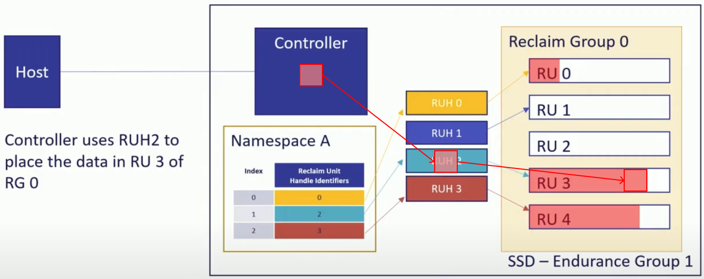

참고한 것들
본 문서의 이미지는 별도의 참조가 걸려있지 않는 한 이 영상 에서 가져왔습니다.
주인장의 기술 이해도가 낮아, 신뢰성이 낮은 문서입니다.
이건 뭐람
- 결론부터 간단히 말하면, Host 에서 data 를 어디에 저장할지 (어느 LBA 공간을 어느 위치에 저장할지) 지정하는 방식 을 통해 GC 로 인한 WAF 증가 등의 문제점을 해결한 방식이다.
- 2022-12-12 에, NVMe TP (Technical Proposal) 4146 으로 제안된 제안서가 승낙 받았다.
- 정식 표준으로 도입되었는 지는 모르겠다.
- 이제 이거에 대해 차근차근 알아보자구
Background
기존 방식의 문제점 - WAF 증가
- 기존의 GC 방식은 데이터 이동이 불가피 하였고, 따라서 WAF 가 증가하게 되는 문제점이 있었다.
- 이것은 추가적인 R/W 가 수반되기 때문에 대역폭 차지, 컴퓨팅 자원 소모 등의 오버헤드가 있어 성능 및 QoS (Quality of Service) 저하를 일으켰다.
- 성능 저하의 일환으로, Host operation 과 GC 의 경합에 의해 시간이 지남에 따라 성능이 더욱 저하되는 문제 (Pre-conditioning 참고) 가 있다.
- 추가적인 R/W 는 PE Cycle Limit 에 더 일찍 도달하게 하여 디바이스 수명을 단축하는 문제가 있었고
- 마찬가지로 추가적인 R/W 는 전력을 더 많이 소모하게 해 환경적/비용적으로도 좋지 않았다.
- 또한 성능을 개선하고자 도입된 OP 는 디바이스의 가용 저장 공간을 제한하는 부작용도 낳았다.
- 이것은 추가적인 R/W 가 수반되기 때문에 대역폭 차지, 컴퓨팅 자원 소모 등의 오버헤드가 있어 성능 및 QoS (Quality of Service) 저하를 일으켰다.
WAF 를 줄이기 위한 FDP 의 접근
- FDP 의 핵심 아이디어는 간단하게 두 가지로 정리해 볼 수 있다:
- Application 별 데이터들이 섞여 있어서 GC 오버헤드가 크다. -> “Application 별로 독립된 Superblock 에 저장해 GC 오버헤드를 줄이자.”
- 단순한 예시를 들면, application 이 data 를 전부 deallocate 했을 때 해당 superblock 을 전부 erase 하면 되기 때문에 GC 에서의 page 이동 오버헤드가 없어지게 된다.
- SSD 레벨에서는 데이터 특성을 알기 어렵기 때문에 특성이 비슷한 데이터들을 모아놓기 힘들다. -> “SSD 에서 Host 에게 superblock 사이즈와 같은 일부 정보를 공유해 주고, Host 에서 직접 데이터를 어디에 저장할 지 결정하게 하여 특성이 비슷한 데이터들끼리 모아 GC 오버헤드를 줄이자.”
- 가령 사용하지 않는 데이터는 Controller 가 GC 에 들어가기 전에 Host 가 미리 모아놓는 등의 준비를 해 놓을 수 있다.
기존 방식의 문제점을 해결하기 위해 이전에 시도된 것들 (History)
- 제일 처음으로 도입된 것은 OP 이다.
- 이것은 WAF 를 줄이지는 못했지만 수명 단축 문제와 Random write 부하 상황에서 GC 성능을 개선했다.
- 그 다음으로 도입된 것은 TRIM 이다.
- Host 가 사용하지 않는 LBA 공간에 대한 정보를 제공해 줌으로서 GC 시 이동시켜야 하는 page 의 양을 줄이도록 하였다.
- 이후에는 Multi-stream 방식, ZNS 와 FDP 가 제안되었다.
- 이것은 Life cycle 이 유사한 데이터들을 함께 배치함으로써, 데이터 이동 없이 GC 가 수행될 수 있도록 해 WAF 를 획기적으로 감소시키고자 하는 접근이다.
Multi-stream, ZNS 와의 차이점
이 부분은 추후에 추가될 예정입니다.
FDP 가 등장하게 된 경위
- 구글과 메타는 각각 독립적으로 WAF 를 줄이고자 하는 연구를 진행했는데, 결론은 “데이터를 디바이스의 어디에 저장할 것이냐” 가 WAF 를 줄이는 핵심 포인트였다고 한다.
- 따라서 구글과 메타는 각각 “SMART FTL” 과 “Direct Placement Mode” 라는 방식을 제안하게 되는데,
- FDP 는 이 두 제안에서 좋은점들만 쏙쏙 뽑아 합친 것이라 한다.
FDP 작동 과정
Architecture

Reclaim Unit (RU)
- 한개 이상의 Block 으로 이루어져서, 다른 RU 들에 영향을 주지 않고 erase, reused, repurposed (다른 목적으로 사용될 수 있는? 모르겠음) 될 수 있는 SSD 의 일부분
- 즉, 실질적으로 데이터를 저장하는 부분이다.
- 정해진 사이즈는 없다: RU 를 몇개의 block 으로 구성할 것인지, 그리고 각 block 은 몇 byte 인지는 제조사가 알아서
- 대신 이 사이즈는 host 에 전달되어서 host 에서도 RU 의 사이즈를 알고 있게 된다.
- 이것은 이전까지는 Superblock 이라고도 불렸다. 즉, RU 를 구성하는 block 들은 물리적으로 인접해 있지 않고 다른 die 에 배치된다.
- 이 FDP 에서는 RU 를 Host 에서 직접 조작하는 방법에 대해서는 언급하지 않는다; 다만, SSD 가 어떻게 이 RU 를 Host 에 노출시키는 것인 지에 대한 것이다.
Reclaim Group (RG)
- 한개 이상의 RU 로 구성돼서, Host 가 데이터를 어디에 저장할지 정할 수 있는 단위가 된다.
- 즉, Host 에서 RU 를 직접 선택하는 것이 아니라, Host 는 RG 를 선택하고 그럼 Controller 에서 해당 RG 안의 RU 를 선택해 데이터를 저장하게 된다. (더 구체적인 작동 과정은 아래 나온다.)
Reclaim Unit Handle (RUH)
- 모든 RG 안의 RU 하나씩을 관리하는 핸들러.
- RUH 는 모든 RG 에 대해 그 안의 RU 하나씩을 반드시 참조하고 있다.
- 따라서 (위 그림 기준) RG 가 RU 에 대한 세로방향 그루핑이라면, RUH 는 RU 에 대한 가로방향의, 모든 RG 에 걸친 그루핑이라고 생각할 수 있다.
- 결과적으로, RG 번호와 RUH 번호가 정해지면 단 하나의 RU 가 특정되고 이 두 번호의 조합으로 Host 는 SSD 에게 데이터를 어디에 저장할 지 알려주게 되는 것이다. (더 구체적인 작동 과정은 아래에서 설명한다.)
Endurance Group
- Endurance group 은 RG 들과 RUH 를 묶은 단위로, 하나의 FDP Configuration 를 가진다.
- 어떤 FDP Configuration 들이 있는지는 잘 모르겠으나, Endurance group 은 여러 Configuration 을 지원하고 그 중에 하나로 설정할 수 있다.
- SSD 는 한개 이상의 Endurance Group 을 가질 수 있다. 가령 media type 이 상이한 여러개의 소자로 SSD 를 구성할 경우 각각의 media type 에 대해 endurance group 을 묶어 서로 다른 configuration 을 적용할 수 있다.
- FDP 는 기본적으로 비활성화 되어 있는데, 특정 Endurance group 에 대해 활성화 하고 어떤 Configuration 을 가질 것인지 설정할 수 있는 인터페이스가 있다고 한다.
NVMe Namespace support

- NVMe Namespace 에서도 FDP 기능을 사용할 수 있도록 호환성을 가지고 있다.
- Host 가 Namespace 를 생성할 때 해당 Namespace 에서 접근할 수 있는 RUH 들을 지정할 수 있다.
- 즉, 해당 NS 에서는 지정된 RUH 밖에 접근할 수 없게 되는 것.
- 그렇다고 해서 한 RUH 가 한 NS 에 종속되는 것은 아니다; 한 RUH 는 여러 NS 에서 접근할 수 있도록 설정할 수도 있다.
- 다만, 이렇게 되면 하나의 RU에 여러 NS 의 데이터가 섞여서 저장될 수 있다. 따라서 RUH 레벨에서 데이터 저장 위치를 분리하고자 한다면, 하나의 RUH 는 하나의 NS 에 종속되게 설정하는 것이 좋을 것이다.
- 기존의 NS create command 에는 이러한 매핑 기능이 없었기 때문에, backward-compatibility 를 위해 defaulting 기능을 제공한다.
- 즉, 만일 NS create command 에 mapping 에 대한 정보가 없다면, Controller 가 자동으로 mapping table 하나를 생성하고 RUH 도 하나 선택해서 연관지어준다.
- 따라서 Host 의 시선에서는 기존에 사용하던 방식 그대로 mapping 정보 없이 NS 를 생성할 수 있는 것이고, Controller 의 시선에서는 (어차피 default mapping table 이 생성될 것이므로) mapping table 이 무조건 존재하기에 이걸 통해 RUH 에 접근하게 되는 것.
Write 과정 예시

- 위 그림은 예시를 위한 간단한 SSD 이다.
- RG 0 한개와 RUH 는 0~3 4개가 있고, Host 는 RUH 0, 2, 3 세개를 사용하는 NS ‘A’ 를 만들어 놓은 상황.
- 다만, 위의 예시에서 RU 번호는 편의를 위한 것 뿐이고 실제로 RU 에 번호가 메겨져 있지도 않고, 외부에서 특정 RU 가 어디에 있는지 확인할 수도 없다.
- 이때 write command 의 작동 과정을 보면 다음과 같다.
- Host 에서 index 와 RG 를 명시해 write command 를 날린다. (
index: 1,RG: 0)

- Write command 가 controller 에 도착하면 controller 는 NS ‘A’ 의 mapping table 을 보고 index 를 RUH 로 변환한다 (
RUH: 2,RG: 0)

- 해당 RUH 가 참조하고 있는 RG 내의 RU 에 데이터가 저장된다.
RUH: 2는RG: 0내의RU: 3을 참조하고 있으므로 해당 RU 에 데이터가 저장된다.

특이 케이스 1) RU 가 전부 찬 경우 처리

- RU 가 전부 차서 더이상 공간이 없을 때에는, Controller 에 의해 RUH 가 참조하고 있는 RU 가 누구에게도 참조되고 있지 않은 RU 로 자동으로 바뀐다.
- 위의 예시에서는
RU: 4가 전부 차서RU: 2로 참조가 변경된 것을 보여주고 있다.
- 위의 예시에서는
특이 케이스 2) Backward compatibility: index, RG 를 명시하지 않은 경우

- FDP 를 지원하지 않는 시스템에서 FDP SSD 를 사용하고자 하는 경우에는 이러한 index, RG 값을 write command 에 포함하지 않을 것이다.
- 이때 또한 backward-compatibility 를 위해 defaulting 이 들어간다:
- index 는 무조건
0으로 설정된다. - 그리고 RG 는 Controller 가 알아서 선택한다.
- index 는 무조건
- 이렇게 하면
[index, RG]튜플이 없어도 정상적으로 작동하게 된다.- (주인장 견해 - 뭐 똑똑이들이 이 경우에도 어떻게 처리되도록 해놨겠지) 다만 이 경우에는
index: 0의 RUH 만 사용될 것이기 때문에 모든 요청이 튜플이 없는 이전 버전의 요청이라면, 사용되지 않는 RUH 가 참조하고 있는 RU 들이 낭비될 것 같다. (NS 에서 RUH 할당 관계를 빼면 되지 않냐 라고 할 수 있는데 그렇다고 해서 RUH 가 사라지는 것이 아니기 때문에? RUH 갯수도 조정이 가능한지 확인해볼 필요가 있다.)
- (주인장 견해 - 뭐 똑똑이들이 이 경우에도 어떻게 처리되도록 해놨겠지) 다만 이 경우에는
FTP 가 제공해주는 부가 기능들
- FDP 에서는 Endurance group 별로 WAF 통계를 보여주는 기능도 있고 (아마?)
- Host 가 직접 새로운 RU 를 달라고 요청할 수도 있다고 한다.
- 또한 Host 가 WAF 를 줄이기 위해 직접 개입할 경우에는 몇가지의 정책(rule) 을 지켜야 한다.
- 만일 이러한 정책을 지키지 않았을 때에는 경고 로그를 작성하게끔 하는 기능도 있다고 한다.
- (비록 위에서 제시한 개념으로는 잘 이해가 안되지만) 특정 ns 의 데이터들을 전부 하나의 RG 에 넣는 것도 가능하다고 한다.
- 여기서 중요한 것은 Controller 는 그냥 placement 정보를 보고 그것에 따라서 넣을 뿐이고, 어디에 넣을지 정하는 것은 전적으로 Host 에 달려있다는 것이다.